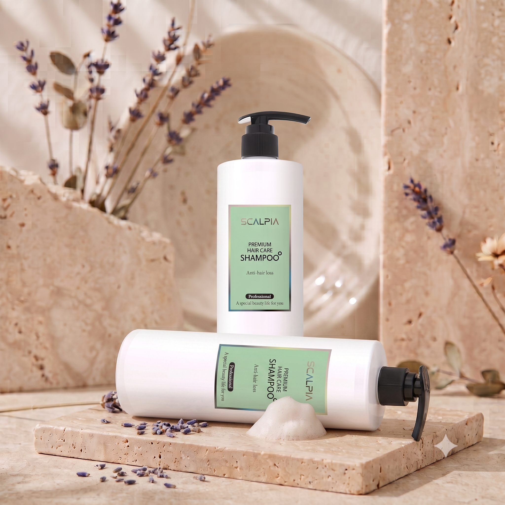
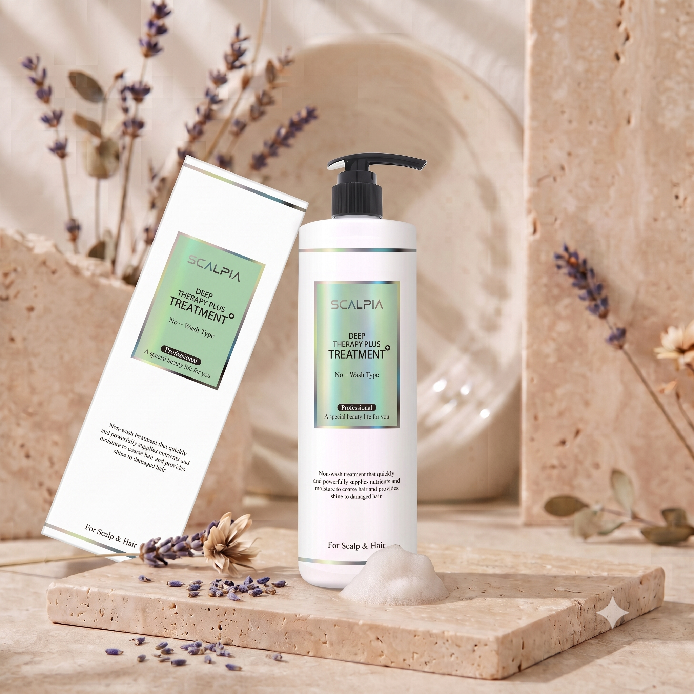
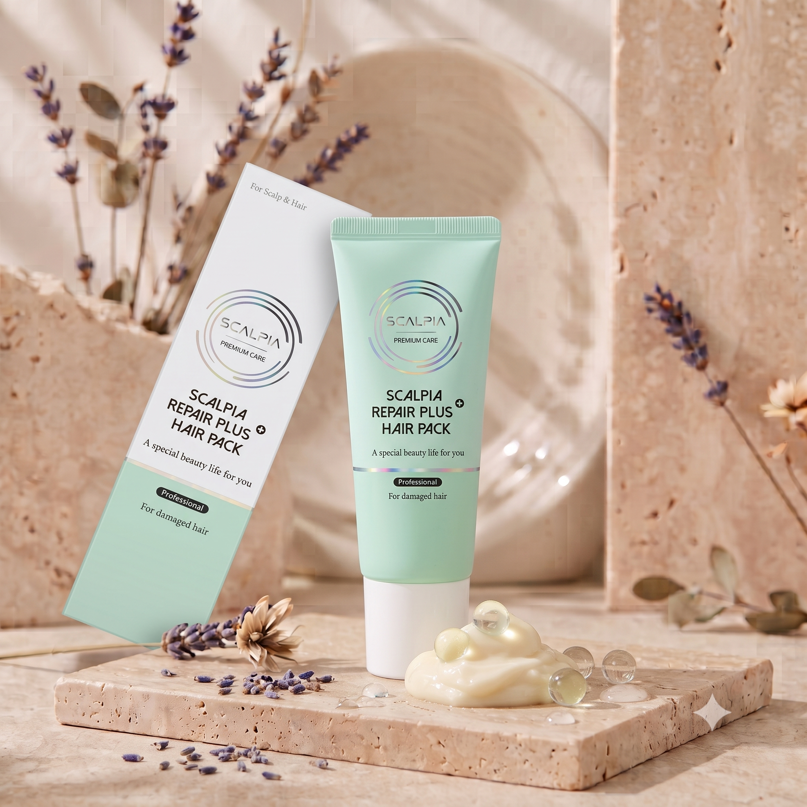
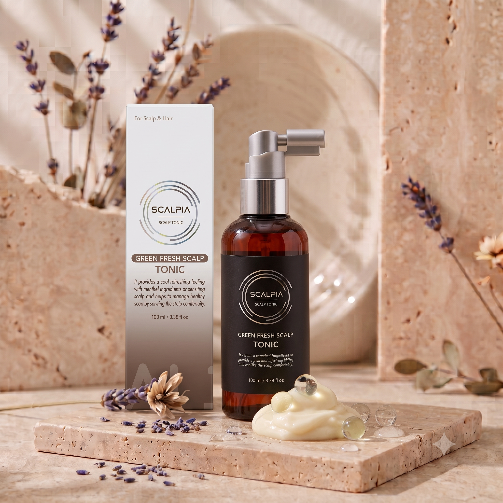
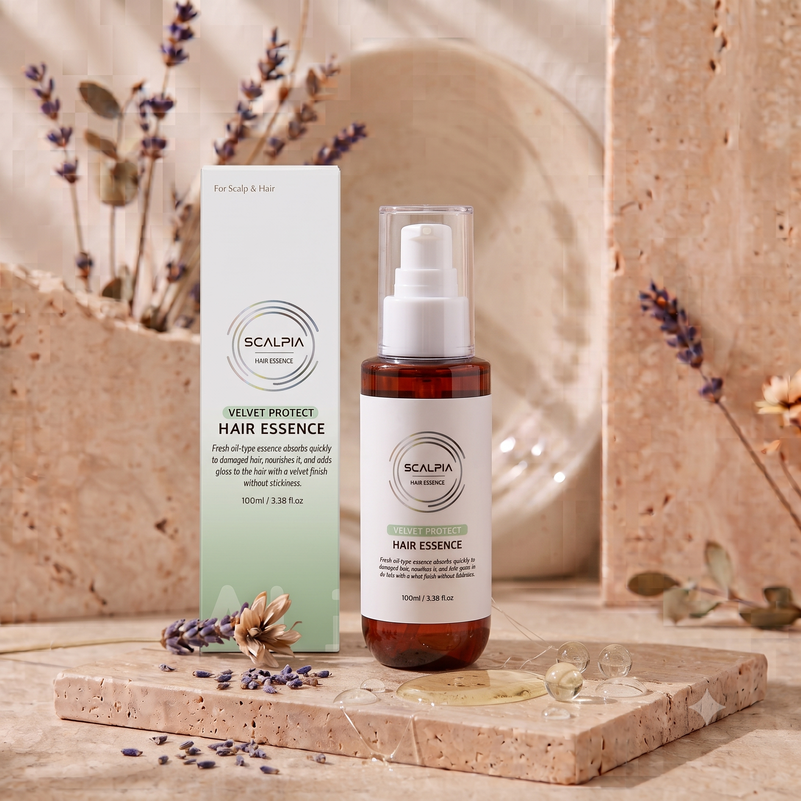

スカルピア ヘアディフェンス 5種セット
頭皮から毛先まで、健やかで美しい髪を育むトータルソリューション

スカルピア プレミアム ヘアケア シャンプー
500 g × 2 ea
爽快な頭皮と柔らかな髪を同時に！
健やかな頭皮環境へ導くプレミアムシャンプー
- ✓さっぱりとした使用感のプレミアムシャンプー
- ✓頭皮と髪の汚れを同時にケアするディープクレンジング
- ✓柔らかく豊かな泡立ちで、マイルドに洗い上げる
- ✓毎日使用しても負担の少ないデイリー仕様
- ✓こだわりの成分処方で、頭皮をすこやかに保つ
主要成分
※上記の内容は、原料の一般的な性質に関する説明です。
使用方法
ぬるま湯で頭皮と髪を十分に濡らした後、適量を頭皮に塗布してマッサージするように泡立て、3〜5分放置した後にきれいに洗い流します。

スカルピア ディープ セラピー プラス トリートメント
300 ml × 1 ea
忙しい朝も洗い流し不要で簡単 NO-Wash！
乾燥した髪にスピーディーに栄養を補給
- ✓手軽なノーウォッシュ（洗い流さない）タイプのトリートメント
- ✓乾燥した髪に水分と栄養のヴェールを形成
- ✓静電気を防ぎ、まとまりのある髪へ
- ✓優雅で温かみのあるスズランをベースにしたホワイトフローラルムスクの香り
主要成分
※上記の内容は、原料の一般的な性質に関する説明です。
使用方法
タオルドライ後、濡れた状態の髪に適量をとり、ダメージが気になる毛先を中心に塗布します。洗い流す必要はなく、そのままドライヤーで乾かして仕上げます。

スカルピア リペア プラス ヘアパック
200 ml × 1 ea
頭皮まで伝わる爽快なクーリング感
タンパク質ケアで髪にハリを与える、頭皮兼用ヘアパック
- ✓頭皮にも使用可能なウォッシュオフ（洗い流す）タイプのヘアパック
- ✓L-メントール配合による爽快な使用感
- ✓17種のアミノ酸が髪を健やかに保つサポート
- ✓愛らしくほのかに香るラブリーピオニーの香り
主要成分
※上記の内容は、原料の一般的な性質に関する説明です。
使用方法
シャンプー後、濡れた状態の髪と頭皮に適量を塗布します。頭皮をセクションに分け、毛先まで均等にマッサージするようになじませます。約10分放置した後、軽く洗い流します。

スカルピア グリーン ブレス スカルプ トニック
100 ml × 1 ea
ベタつかないさっぱりとしたウォータータイプ
頭皮のコンディションを整えるデイリーケアアイテム
- ✓軽やかでさっぱりとしたウォータータイプのトニック
- ✓メントールの爽快な使用感
- ✓植物性抽出物によるマイルドな整肌効果
- ✓いつでもどこでも手軽に頭皮ケアが可能
主要成分
※上記の内容は、原料の一般的な性質に関する説明です。
使用方法
タオルドライ前・後、または必要に応じて、製品を軽く振ってから頭皮に直接スプレーし、指の腹でマッサージするようになじませて吸収させます。

スカルピア ベルベット プロテクト ヘア エッセンス
100 ml × 1 ea
ほのかなホワイトフローラルムスクの香りと、栄養たっぷりのベルベットな仕上がり！
乾燥した髪のための高栄養ヘアエッセンス
- ✓乾燥した髪に保湿膜と栄養を与える
- ✓パサつく髪を集中ケアし、まとまりのある髪へ
- ✓ベタつきのない、なめらかなベルベット仕上げ
- ✓優雅なホワイトフローラルムスクの香り
主要成分
※上記の内容は、原料の一般的な性質に関する説明です。
使用方法
タオルドライ後、濡れた状態の髪に適量をとり、まんべんなく塗布した後ドライします。ドライ後、仕上げに毛先を中心に塗布するとさらに効果的です。